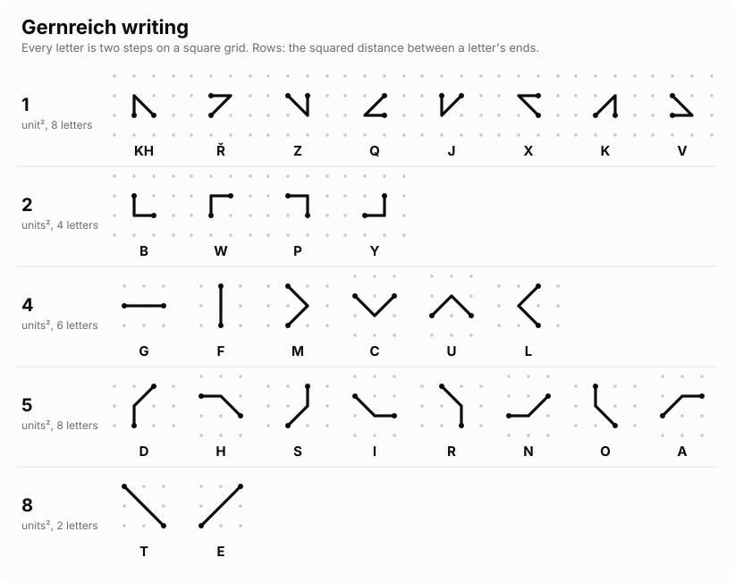
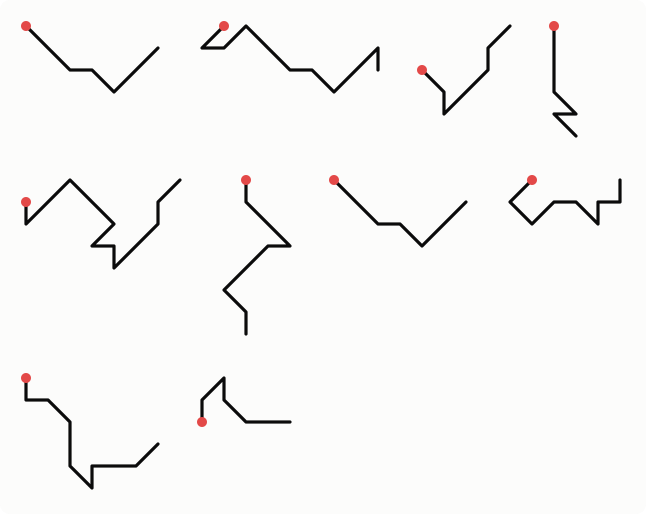
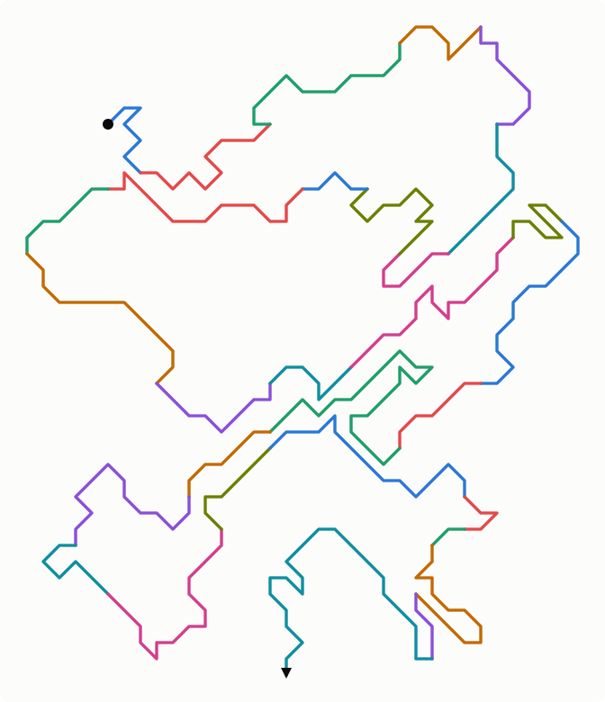
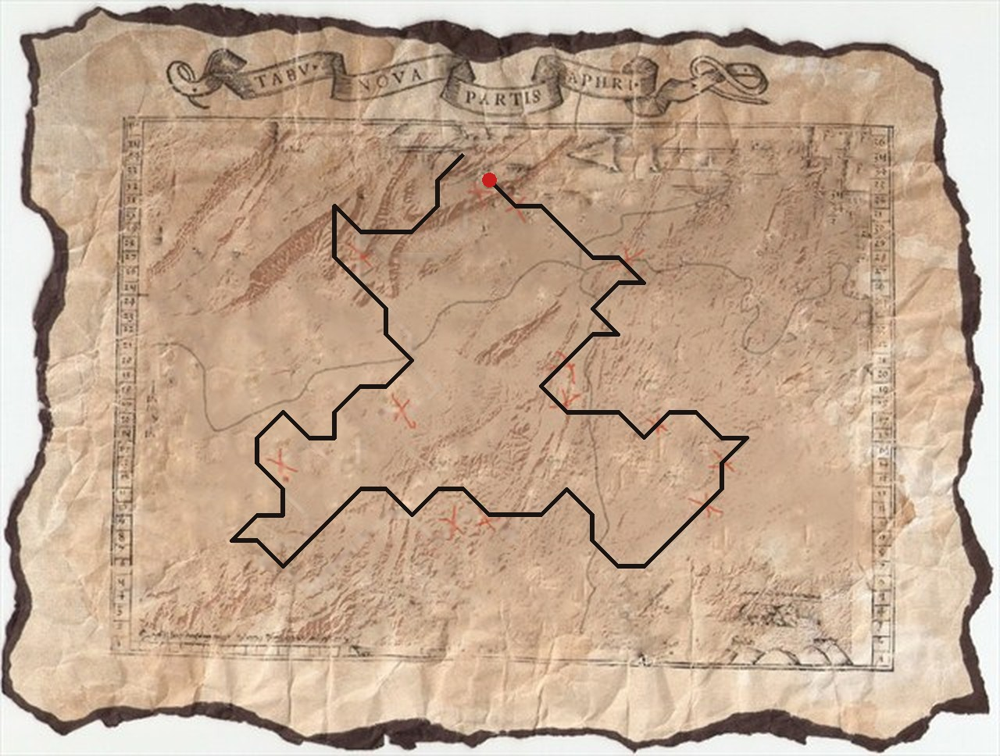
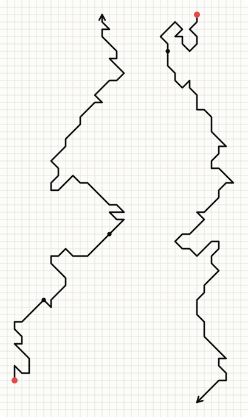

Gernreich writing
A script in which every letter is two steps on a square grid, and every word is one unbroken line. Each letter starts where the one before it ended, so a sentence draws itself as a single path that wanders across the page.
Whose work this is. The Gernreich writing, its alphabet and the texts under Michael's writings are Michael Carnright's. The writer and reader on this page and every drawing on it are by Claude Code, built from his alphabet chart.
How it works
A pen on a square grid can move one step in eight directions: across, up and down, or diagonally. A letter is two such steps. Two steps that double back on themselves make no shape, which leaves exactly 28 shapes, and the alphabet uses every one of them: the 26 letters, KH, and a 28th drawn in the chart with a marked R (shown here as Ř; its sound is not recorded).
A shape can be traced either way, so the writer chooses the direction of each letter
to keep the line going and keep it from running into itself. The same word can come out
as several different paths; Michael drew ONE five ways and
GOUD (Dutch for gold) nine. A reader needs only the starting point, marked with a
dot: from there every two steps is one letter.
The alphabet
The chart groups the letters by how far apart a letter's two ends are, as the square of that distance: 1, 2, 4, 5 or 8 units². That distance was chosen by how common the letter is in English. T and E, the most common, have the greatest distance, two full diagonals; the next eight, A O I N S H R D, come next at √5; the rarest, J K Q V X Z (with KH and Ř), barely move at all. So the letters that turn up most carry the line furthest, and writing a sentence keeps moving on across the page instead of knotting up on itself, which makes the writing easier to create.

make_chart.js).Write
Type anything. Letters outside the alphabet are left out; KH is written as one letter. Every drawing picks the direction of each letter at random, so the same text comes out as a different path each time: press Draw again for another.
Read
Draw a path: tap a point to start, then tap one of the eight points around the end of the line to go on. Every two steps is read as a letter.
Michael's writings
Michael's longer pieces, redrawn with the chart's letters.

make_fox.js).
Draw it another way.Article 1

make_article.js). Hover over a word to see it.The map loop
Michael also wrote a sentence as a loop over an old map (Tabula Nova Partis Africae). Here it is redrawn with the chart's letters, starting at the red dot:

From the dot it reads IT HAVE I HAID ENOUGH CAE HAR DID NOT FIND. Read round the loop, the end runs on into the start:
…DID NOT FIND IT. HAVE I HAID ENOUGH? CAE HAR…
The dotted words are uncertain: HAID is drawn H A I D, most likely meant as "had" (or "hid"); CAE HAR is drawn C A E H A R, perhaps meant as "cache", which has an H the drawing lacks. The dot sits where Michael's loop has its seam once G is corrected; starting at DID instead would mean redrawing his T and I as well.
The best guess at the whole sentence, with crosses on an old map suggesting a treasure hunt:
"I did not find it. Have I had enough? Cache…"
Two lines on graph paper: a coordinate
Michael drew two lines on graph paper, each from a dot to an arrow, in the bolletje-pijltje (dot and arrow) style of road-rally route instructions, with rally papers from the Rallye du Condroz around it. One square of the paper is one step. Read as Gernreich writing, the two lines spell out a GPS position in words.
- Left line, from the dot at the bottom up to the arrow: FIFTY ONE · ZERO NINE · EIGHT HUNDRED SEVENTY TWO, that is 51° 09.872′ north.
- Right line, from the dot at the top down to the arrow, written upside down, so it reads only with the sheet turned round: DOUBLE O FOUR · FIFTY SIX · SEVEN HUNDRED FORTY ONE, that is 004° 56.741′ east.

make_coords.js,
by Claude Code). Only the G of EIGHT and the W of TWO change, from the corner and the
straight line to the chart's shapes; every other letter keeps the direction Michael
drew it in, and the right line is still upside down. Small dots mark the breaks between
the numbers.Together: N 51° 09.872′, E 004° 56.741′, at Velveken, between Geel and Laakdal in the province of Antwerp, Belgium. The dots inside the lines mark breaks between the numbers.
Read from a photo of the sheet; the left line reads all 38 letters as drawn. On the right, one vertical stroke near the bottom measures about one and a half squares in the photo; it is read as two, the only length that gives FORTY ONE. As in Michael's other drawings, G and W are drawn the other way round from the chart (EIGHT has the corner, TWO the straight line).